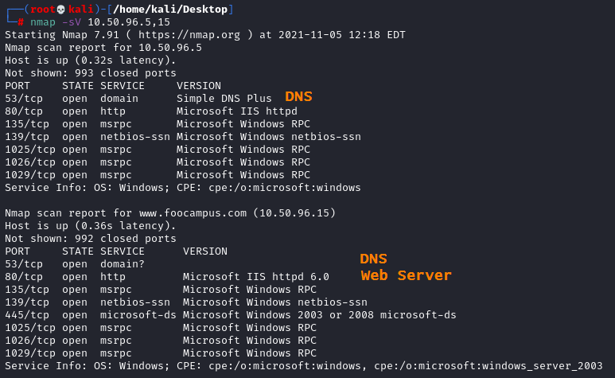
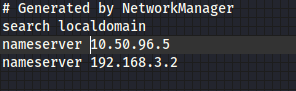

FQDN reachabale by querying the internal DNS server
Valid for Internal Networks
If we have find in the Internal Network a DNS server
nmap -sS -sU --source-port 53 -p53 -n <netblock>
an hostname (FQDN) could be reachable through this name server
Edit •
/etc/hosts It map hostnames to IP addresses
Edit this file when we find an ip address of a machine that have Web Server active
•
/etc/resolv.conf  When we find a DNS inside the internal network, we should put its address in this file, above the others so it is queried first
By placing this entry above the default nameserver our machine will use this one on the target host first, and then if that fails, use the default nameserver.
By doing that we could resolve more domain names specific to the target host.
This valid both when we are doing an Internal Penetration test and an external one on the WebApp.